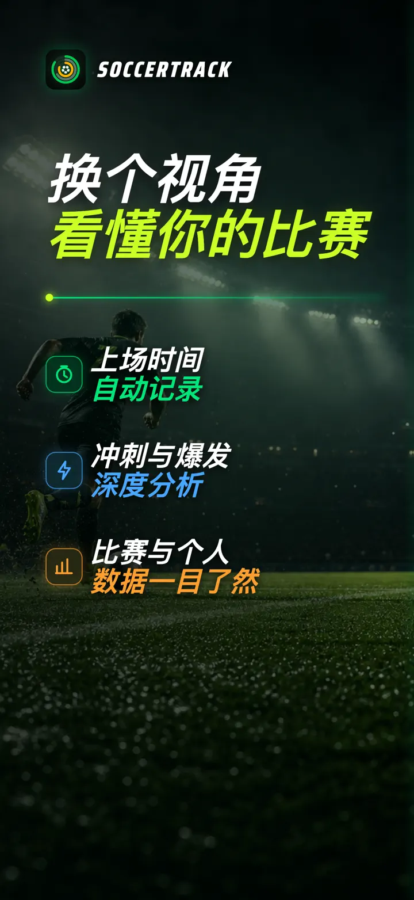
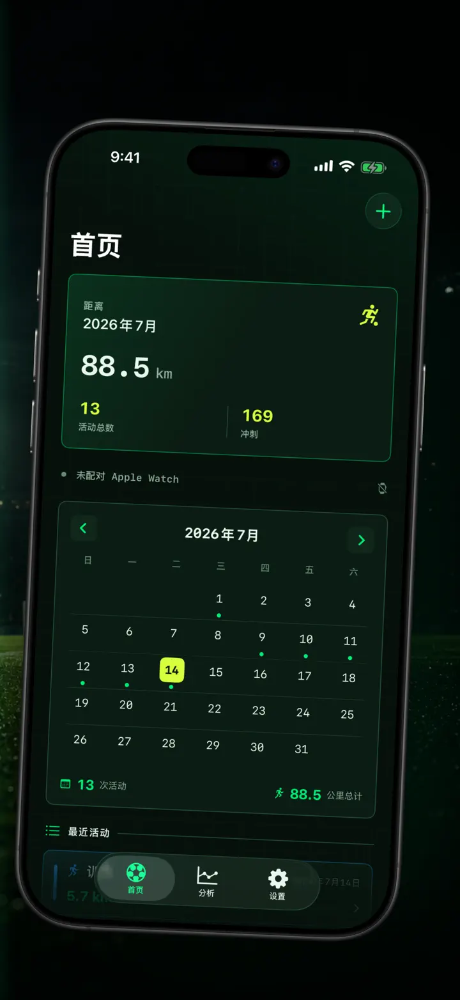
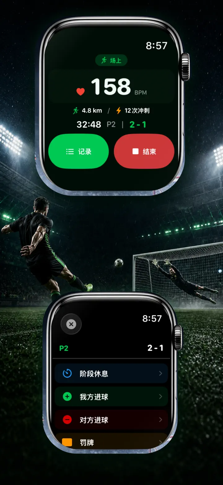
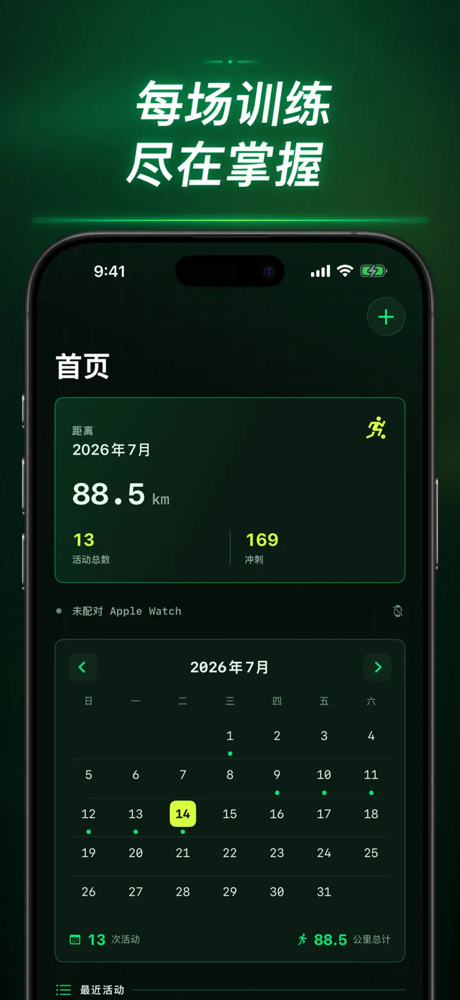
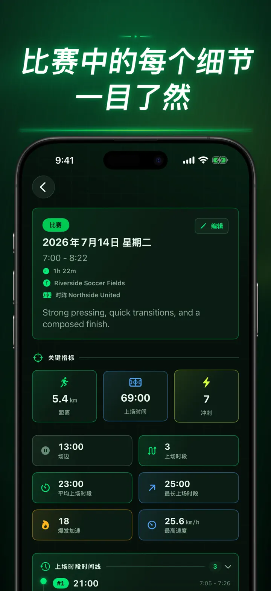
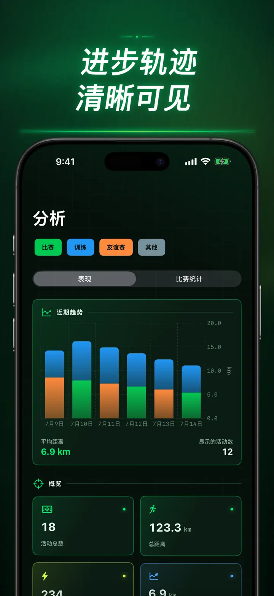
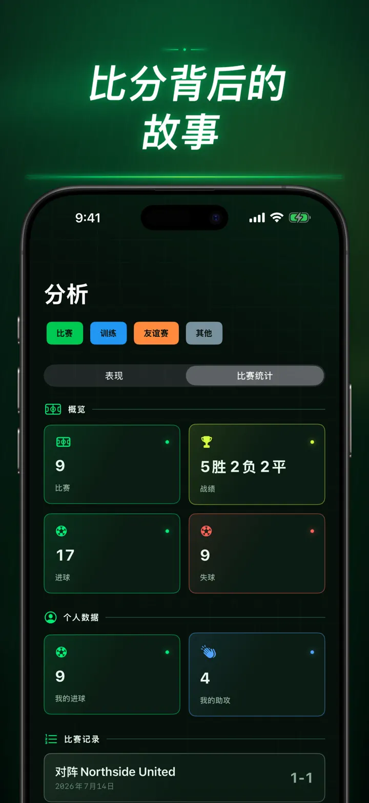
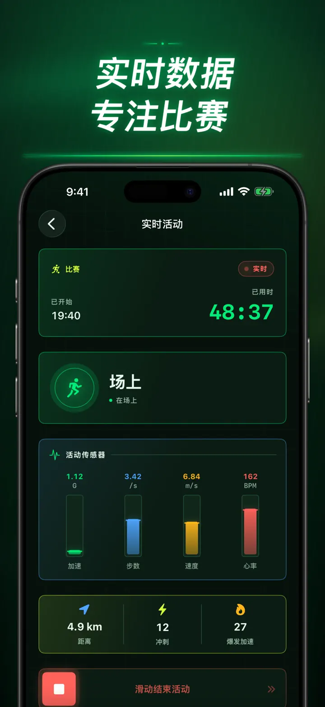
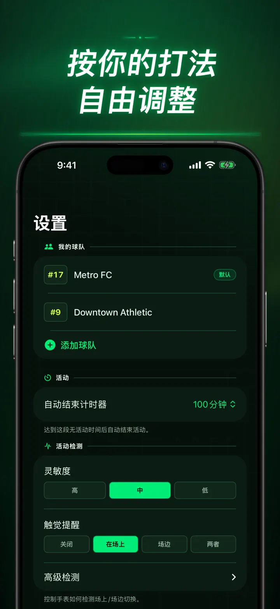
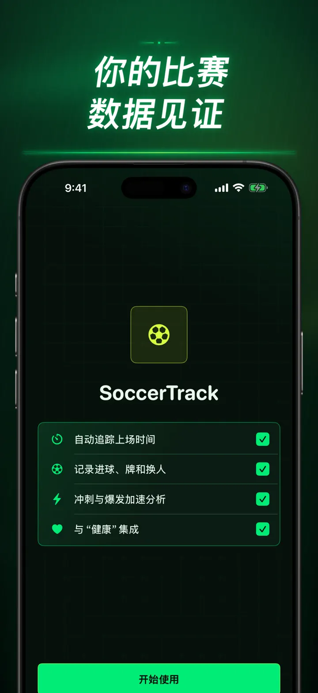

Soccer Time Track
足球上场时间与比赛分析
开始一次训练，然后专注踢球。Apple Watch 自动区分上场与场边时间，并记录实时指标、冲刺、比赛事件和长期趋势。
从 App Store 下载
关于本应用
换个角度看你的比赛。
Soccer Time Track 将 Apple Watch 变成球员的比赛助手，让你看到终场比分之外的表现。从手腕开始记录，专注比赛，结束后在 iPhone 上查看完整而细致的表现分析。
自动统计上场时间
准确了解自己何时真正参与比赛。运动、体能训练和位置数据可帮助区分上场、低活动和场边时段，并提供：
- 上场时间和场边时间
- 分段记录和清晰的时间线
- 整场训练过程的详细分析
在手腕上记录比赛
选择比赛、训练、友谊赛或其他。比赛过程中可记录：
- 本队与对手进球
- 你的进球和助攻
- 黄牌和红牌
- 换人和比赛阶段
用数据了解你的表现
除了上场时间，还可查看：
- 跑动距离
- 平均速度和最高速度
- 冲刺和高强度爆发
- 心率和活动能量
- 步频和加速度
实时数据，专注比赛
配对的 iPhone 可以显示实时指标，同时 Apple Watch 持续记录体能训练。你只需专注比赛，数据会在后台逐步形成。
看见自己的进步
将比赛、训练、友谊赛和其他记录集中在同一历史中。查看趋势和个人最佳成绩，比较不同训练，并添加球队、球衣号码、对手、地点和备注，为每次结果保留完整背景。
需要在其他地方使用数据？可将训练、分段记录和比赛事件导出为 CSV 或 JSON。
专为 APPLE WATCH 与“健康”设计
获得你的许可后，Soccer Time Track 会使用体能训练、心率、运动和位置数据生成分析，并将已完成的足球体能训练保存到“健康”。自动记录需要 Apple Watch。你也可以在 iPhone 上手动添加记录。
你的数据，你的比赛
记录保存在你的设备上；开启 iCloud 同步后，还会保存在你的私人 iCloud 数据库中。Soccer Time Track 无需账户、没有广告，也不使用第三方分析工具。
不再猜测自己踢了多久。看清每一分钟里你做了什么。
隐私政策：https://masawata.net/SoccerTimeTrack/privacy-policy.html 服务条款：https://www.apple.com/legal/internet-services/itunes/dev/stdeula/
屏幕截图









Soccer Time Track
开始一次训练，然后专注踢球。Apple Watch 自动区分上场与场边时间，并记录实时指标、冲刺、比赛事件和长期趋势。
从 App Store 下载